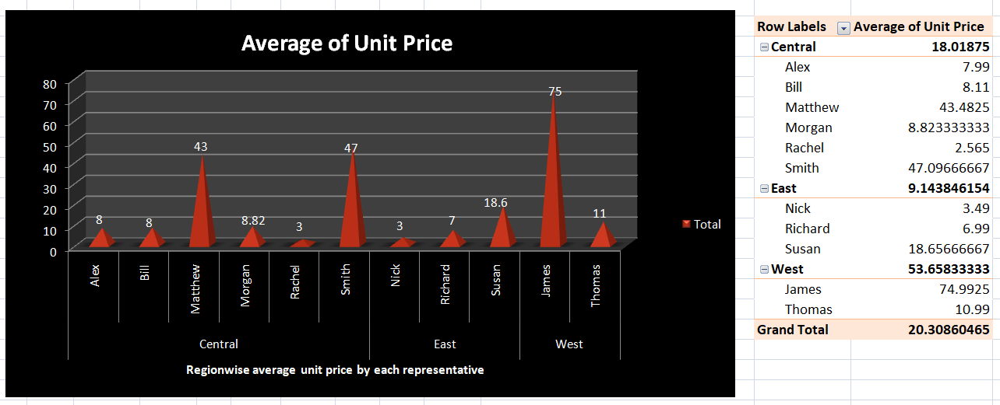
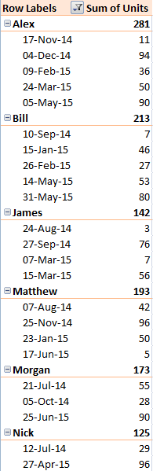
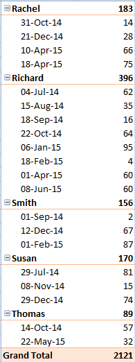
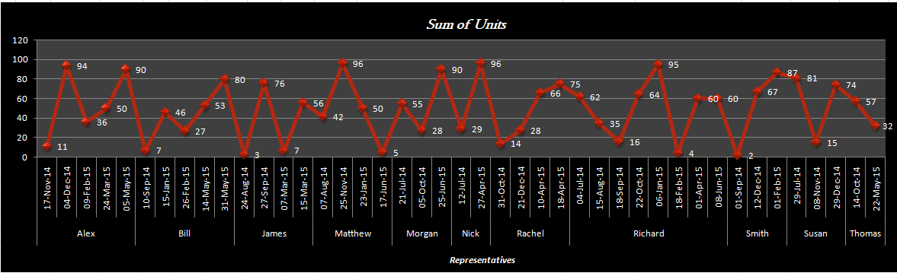

What is done?
Two views are created.
Let's understand scenario 1, where a pivot table is created to show the region wise average of unit price of the items sold by each representative. Also, to visually represent the scenario, a chart has been created on the basis of the pivot table with rounded off value for the average unit price value.
Now, let's understand scenario 2, where again a pivot table is created to depict the date whise sum of units sold by each representative.
 The pivot chart is created as shown below,
Why are Pivot Tables created and how is it helpful to Data Analysts?
Pivot tables are created to summarize and analyze large datasets efficiently. They allow data analysts to quickly generate insights by arranging and aggregating data according to various dimensions. Pivot tables help identify trends, patterns, and correlations within the data, aiding in decision-making and providing actionable insights in a concise manner.
What does a Pivot Chart do?
A pivot chart is a graphical representation of data derived from a pivot table. It visually summarizes and displays the information contained in the pivot table, making it easier to interpret trends, patterns, and relationships within the data. Pivot charts provide a dynamic way to visualize data, enabling users to explore and analyze information more effectively.
How Pivot chart is different from other charts?
Derived from Pivot Tables:
Pivot charts are directly linked to pivot tables. They visualize the summarized data from the pivot table, allowing users to dynamically explore the same data in graphical form.Dynamic Interactivity:
Pivot charts offer dynamic interactivity. Users can manipulate the fields and parameters in the associated pivot table, and the pivot chart updates accordingly, providing real-time visualization of the changes.Aggregation and Grouping:
Pivot charts automatically aggregate and group data based on the settings of the pivot table. This enables users to quickly visualize trends and patterns in the summarized data without manually aggregating the raw data themselves.Integration with Pivot Table Features:
Pivot charts seamlessly integrate with features of pivot tables, such as filtering, sorting, and drilling down into specific data subsets. This integration enhances the analytical capabilities of pivot charts by allowing users to interactively explore different aspects of the data.Ease of Creation and Modification:
Pivot charts are typically easier to create and modify compared to manually creating charts from raw data. Users can leverage the existing structure and summarization of the pivot table to quickly generate meaningful visualizations without extensive data preprocessing.Overall, pivot charts provide a powerful and efficient way to visualize and analyze summarized data from pivot tables, offering dynamic interactivity and integration with pivot table features for enhanced data exploration and insights.